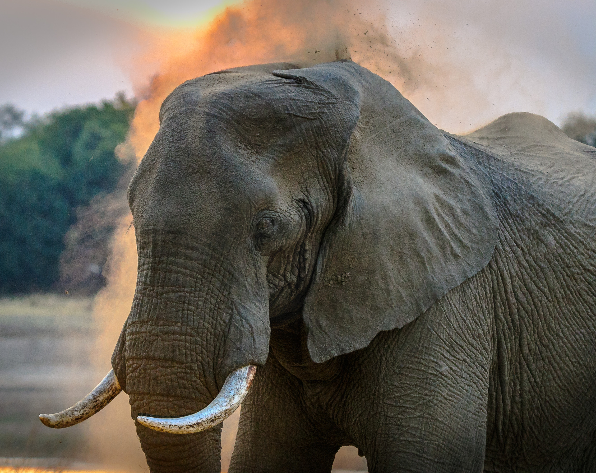

Indian Elephant As Specie
The classification of elephants as megaherbivores and the listing
as vulnerable, affected by habitat destruction, depletion, and
fragmentation are both derived from one scientific study. Asian
Elephants, which make up a majority of the population of this
species, are located in South India and prefer grasslands,
evergreen and semi-evergreen forests. Let us give you few facts
about this creature, Although the trunk of this elephant has no
bones, it is nonetheless hollow. Although there are a total of 62
muscles in the entire human body, there are about 40,000 muscles
on the entire trunk, which is 62 times the number of muscles in
the human body. In addition, Indian Elephants will drink up to 200
liters of water per day during the summer months. This strong
drink indicates that the mammal will drink its weight nearly three
times a month in water


Indian Elephant Behavior
The elephant societies that have been recorded in the wild are
called herd societies. Groups are almost all matriarchal and are
made up of 20 closely connected female Indian elephants. The older
females lead the parties. During the search for food and drink,
the leader leads the entire party. These elephant species live in
herds. For their mates, the Indian elephant has to feed for 19
hours a day, and because of this, it creates a significant volume
of waste – nearly 220 pounds of dung per day. They can go as much
as 250 kilometers a day to find more nutrients. They will keep on
their feet even though they are asleep in the wild. Indian
elephants serve as a perfect example of how human/animal conflict
will occur due to competition over limited resources. These
species reside in one of the most heavily populated areas on
Earth, where human populations continue to rise, while food and
farmland are in increasingly short supply. As a result, elephants
are migratory and cover vast territories, although this is
occurring rapidly due to human development. Elephants and humans
can come into conflict as they are forced to live with each other.
When elephants, which are social and move in herds, trample farm
fields, they either come to feed or fly across the fields. Once
farmers realized that people would be taking their cattle, they
started hunting and moved the animals to remote, scattered pockets
of territory, surrounded by human settlements. As a result of
these deaths every year, there are hundreds of elephants and
civilians who are killed in these wars.